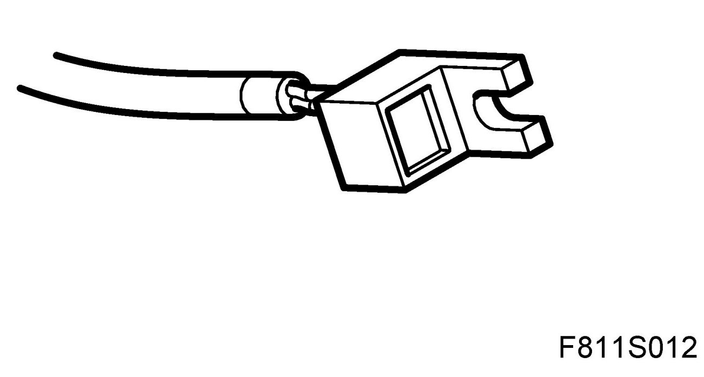
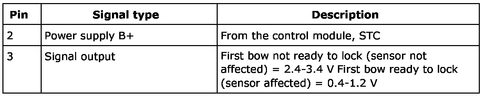
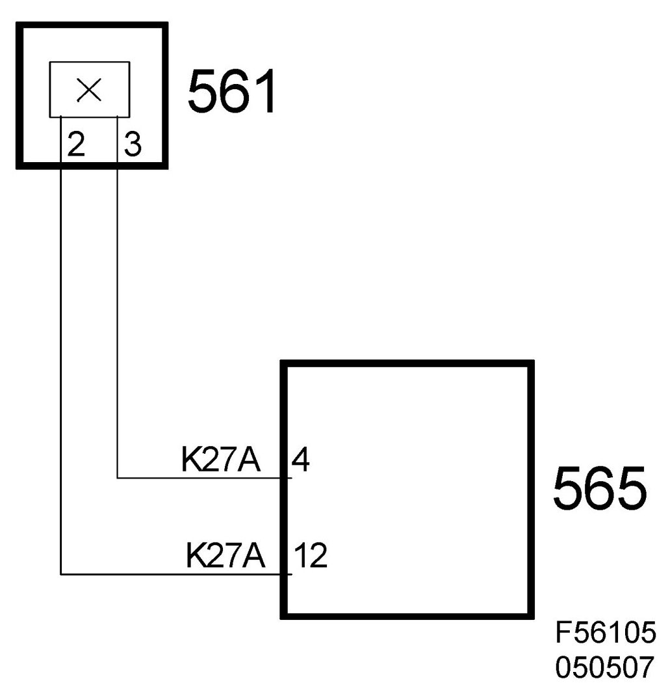

Position Sensor, First Bow Ready to Lock (561)
Position Sensor, First Bow Ready To Lock (561)
Location
Position sensor, first bow ready to lock (561)

Main task
The sensor informs the STC control module as to whether or not the first bow is ready to lock, i.e. it signals the position of the locking catch on the first bow.
Type
Hall sensor with inbuilt magnet.
Connection

The sensor is connected to the STC control module with two leads. The sensor is energized with B+ on pin 2 and gives information to the STC control module on pin 3.
The sensor is affected by a metal tongue on the LH locking catch on the first bow. The sensor is affected when the first bow is ready for locking.
